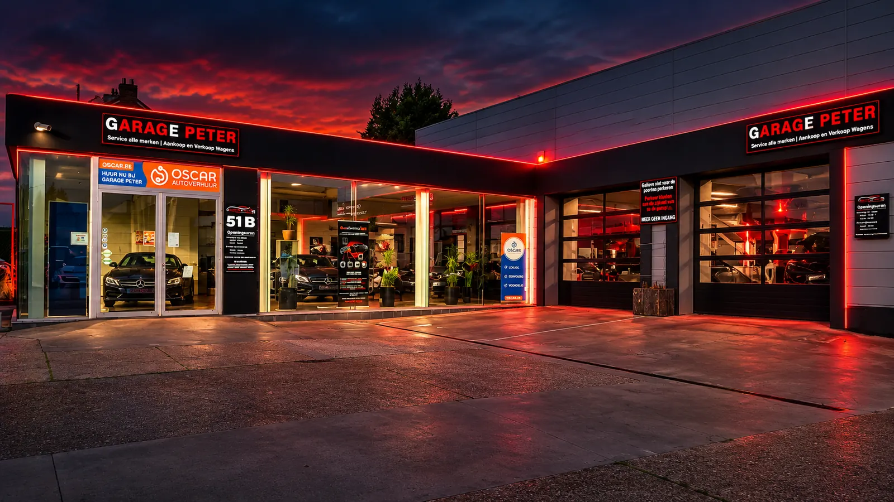
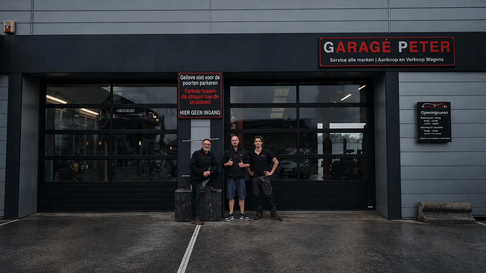

01 / KEURING
Afgekeurd op fijnstofuitstoot
De deeltjestest meet de uitstoot van je dieselwagen. Bij een te hoge waarde onderzoeken we welke technische oorzaken mogelijk meespelen.
Te veel fijnstof bij de keuring, een verstopt roetfilter of een waarschuwingslampje? Bij Roetfilter Specialist onderzoeken we het probleem en bekijken we of reinigen een alternatief kan zijn voor vervangen.
Echte klantervaring: BMW X1 van 2.400.000 naar 8.000 deeltjes volgens de klant. Lees de ervaring ↓
Een hoge deeltjestelling heeft niet altijd dezelfde oorzaak. Daarom is het belangrijk om niet zomaar onderdelen te vervangen.
De deeltjestest meet de uitstoot van je dieselwagen. Bij een te hoge waarde onderzoeken we welke technische oorzaken mogelijk meespelen.
Een ophoping van roet kan leiden tot een verhoogde tegendruk, storingen of vermogensverlies. Niet elk filter is nog te reinigen.
Ook bijvoorbeeld sensoren, EGR-problemen of olieverbruik kunnen invloed hebben. Een behandeling lost een onderliggend defect niet automatisch op.
We bespreken vooraf welke behandeling geschikt lijkt voor je wagen. Alle onderstaande prijzen zijn inclusief btw. De combinatie is €50 voordeliger dan beide behandelingen afzonderlijk.
Behandeling met additieven, inclusief één regeneratie. Reken op minimaal 2,5 uur behandeltijd.
Gespecialiseerde reiniging van roetfilter (diesel) of katalysator (benzine), voor dezelfde prijs, waar technisch mogelijk zonder demontage waar technisch mogelijk, inclusief één regeneratie. Behandeltijd: ongeveer 1 uur, met een andere gespecialiseerde machine.
Beide behandelingen op dezelfde dag, elk met de inbegrepen werkwijze; inclusief twee regeneraties (één per behandeling). Voorzie minimaal 3,5 uur voor de behandelingen samen.
Eerlijk advies: we beloven geen goedkeuring die we niet kunnen garanderen. Daarom bekijken we eerst of reinigen bij jouw wagen zinvol lijkt, en zeggen we het ook als een andere oplossing nodig is.
Goed om te weten: de genoemde tijden zijn richttijden voor de behandeling; diagnose, voorbereiding of bijkomende werkzaamheden kunnen extra tijd vragen. Pas na een eerste behandeling kan blijken of een tweede behandeling of extra regeneratie nodig is. Extra werken gebeuren uitsluitend na overleg en worden afzonderlijk aangerekend. Een geslaagde technische keuring of herstel van een defect filter kan niet worden gegarandeerd.
Vertel ons welke wagen je hebt en wat er bij de keuring of tijdens het rijden gebeurt.
We bekijken de symptomen en bespreken of verdere diagnose nodig is.
We voeren de afgesproken behandeling uit, wanneer die technisch verantwoord is.
Je krijgt uitleg over het resultaat en eventuele volgende stappen of controle.
Een kijkje achter de schermen in onze werkplaats in Bredene. We gebruiken additieven en gespecialiseerde apparatuur volgens de gekozen behandeling en volgen het proces op.
Werkplaatsfoto's ter illustratie van onze werkwijze. De geschikte behandeling hangt af van de technische staat van het voertuig.
Echte ervaringen van klanten van Garage Peter met roetfilterreiniging en motorontkalking. De weergegeven resultaten zijn individuele ervaringen en vormen geen garantie.
Een klant kwam bij Garage Peter in Bredene langs met een dieselwagen die weinig vermogen had en moeilijk koud startte. Na een motorontkalking met additieven meldde de eigenaar ons bij telefonische opvolging na 14 dagen dat de wagen duidelijk beter reed, vlotter koud startte en geen waarschuwingslampjes meer vertoonde.
Samenvatting van telefonische klantenfeedback, geen letterlijk citaat of Google-review. Individuele resultaten verschillen.
Bekijk dit praktijkvoorbeeld →Didier David bedankt Peter in zijn Google-review voor het reinigen van zijn roetfilter. Volgens Didier raakte zijn wagen daarna meteen door de autokeuring. Hij vermeldt ook de voordelige bandenwissel en de jarenlange uitstekende service.
5/5 sterren op Google · Samenvatting van een echte klantbeoordeling. Het resultaat is individueel; slagen voor de keuring is niet gegarandeerd.
Philippe Barbaix vertelt in zijn Google-review hoe zijn BMW X1 na een A9-motorontkalking bij Garage Peter ongeveer 14 dagen later opnieuw door de deeltjestest raakte. Volgens zijn review daalde de meting van 2.400.000 naar amper 8.000 deeltjes. Zo hoefde hij geen nieuwe roetfilter te laten plaatsen.
Samenvatting van de door de klant gepubliceerde review. Dit individuele resultaat is geen garantie voor andere wagens.
Bekijk Garage Peter op Google Maps ↗De klant vertelt dat zijn Ford C-Max eerst meer dan 4.000.000 deeltjes aangaf. Na motorontkalking en roetfilterreiniging, gevolgd door ongeveer 500 kilometer rijden, lag de meting bij de herkeuring onder 1.000.000 deeltjes. De wagen werd opnieuw voor twee jaar goedgekeurd.
Samenvatting van een gepubliceerde Google-review, geen letterlijk citaat. Individuele resultaten verschillen en een geslaagde keuring is niet gegarandeerd.
Bekijk meer ervaringen en werkzaamheden ↗Dat is bij bepaalde voertuigen en problemen mogelijk. We bekijken eerst of de methode voor jouw wagen geschikt is. Bij schade of andere technische oorzaken kan vervanging of herstelling nodig zijn.
Nee. Het resultaat hangt af van de staat van de roetfilter, de motor en eventuele andere defecten. We geven daarom geen garantie op een geslaagde deeltjestest.
De vermelde behandelingen omvatten telkens de aangegeven regeneratie. Eventuele bijkomende regeneraties of werken bespreken we eerst en rekenen we afzonderlijk aan.
Neem vooraf contact op om je probleem te bespreken en een afspraak te maken.
Ja, we behandelen zowel benzine- als dieselmotoren, afhankelijk van de technische toestand. Lees meer over ozonmotorontkalking.
Bij enkele behandelde wagens, waaronder PureTech-motoren, zagen we een daling van het olieverbruik. Dit is geen garantie: bij mechanische slijtage of beschadigde afdichtingen is een herstelling nodig. Bekijk de uitleg over olieverbruik.
Ja, na technische beoordeling. De reinigingsbehandeling kost €300 inclusief btw. Lees over katalysator- en roetfilterreiniging.
Ja. Onze werkplaats is gevestigd in Bredene bij Oostende. Ook klanten uit Brugge, Blankenberge, De Haan, Gistel, Oudenburg en elders in West-Vlaanderen zijn welkom op afspraak.
Roetfilter Specialist is onderdeel van Garage Peter. Je bent welkom in onze werkplaats aan de Brugsesteenweg 51b, 8450 Bredene, waar Peter, Adam en Thomas voor je klaarstaan.


Vul je gegevens in en voeg eventueel relevante keuringsdocumenten toe. We bekijken je aanvraag en nemen contact op. Je ontvangt binnen één dag een reactie. Dit is nog geen afspraakbevestiging.
Vermeld bij voorkeur merk, model, bouwjaar, motorisatie en eventuele meetwaarden van de deeltjestest. Zo kunnen we je gerichter helpen.
Brugsesteenweg 51b
8450 Bredene · België
059 33 33 11 · info@garagepeter.be
BTW: BE 0673.923.732
Behandelingen uitsluitend op afspraak.
Route bekijken ↗Middagpauze van 12.00 tot 13.30 uur. Zaterdagmiddag: showroom enkel op afspraak. Roetfilterbehandelingen uitsluitend op afspraak.
Lees onze uitgebreide uitleg over roetfilter reinigen in West-Vlaanderen en motorontkalking in Bredene. Zo weet je welke mogelijkheden er zijn vóór je een aanvraag indient.
Onze motorontkalking met ozon is bedoeld voor zowel benzine- als dieselmotoren, afhankelijk van de technische toestand. Kool- en roetafzettingen rond kleppen, zuigers en zuigerveren kunnen bijdragen aan motorproblemen. Bij enkele behandelde wagens, waaronder PureTech-benzinemotoren, hebben we in de praktijk een lager olieverbruik vastgesteld. Dat is geen garantie: versleten zuigerveren of klepsteelafdichtingen kunnen niet met ontkalking hersteld worden. Voor uitlaatgasnabehandeling werken we met gespecialiseerde reiniging: katalysator bij benzinewagens en roetfilter bij dieselwagens. We beoordelen vooraf welke behandeling zinvol is voor jouw wagen.
Meer over ozonmotorontkalking en olieverbruik →